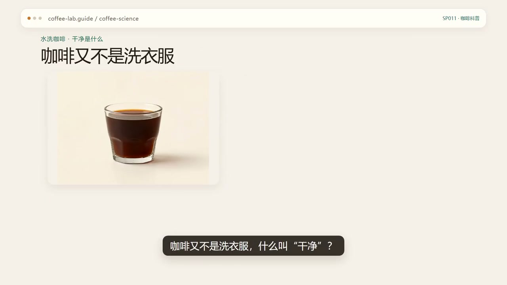
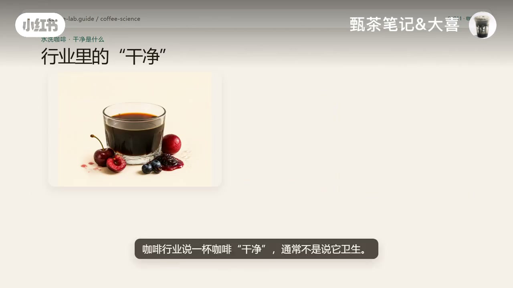
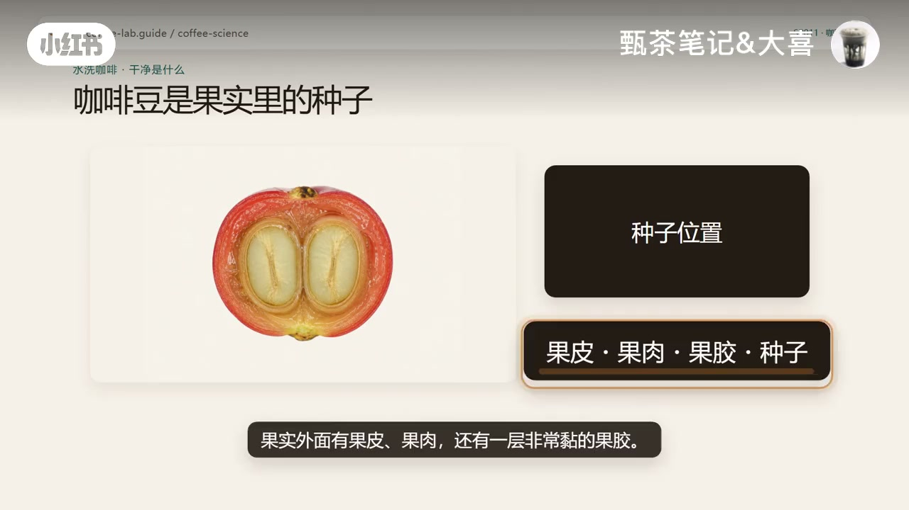
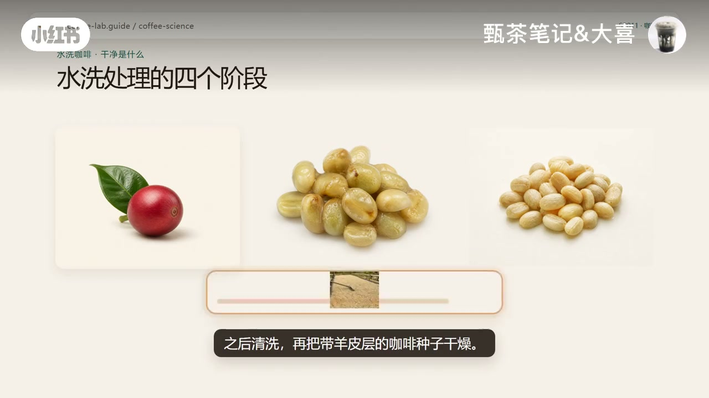
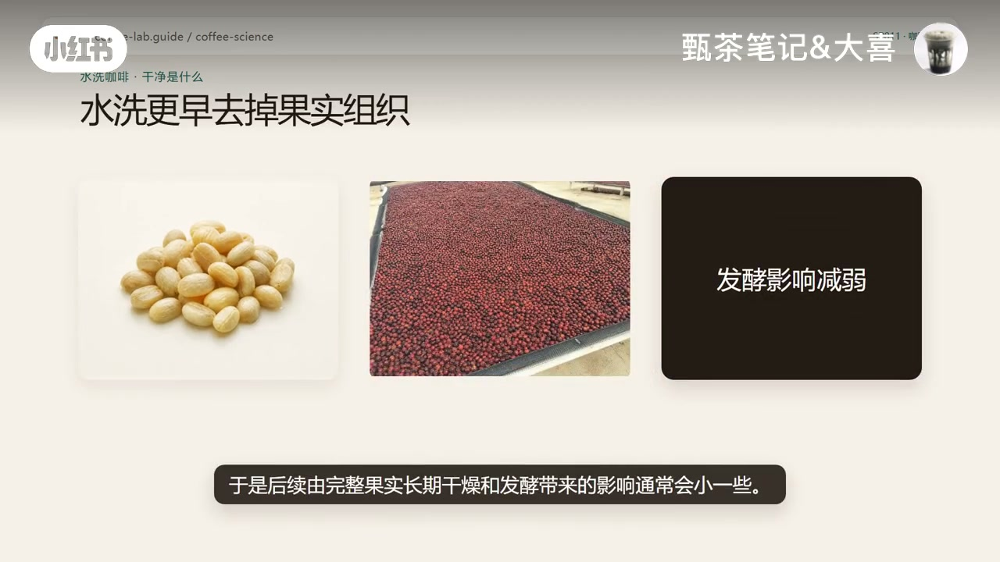
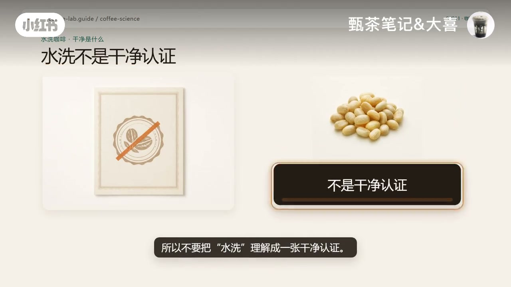
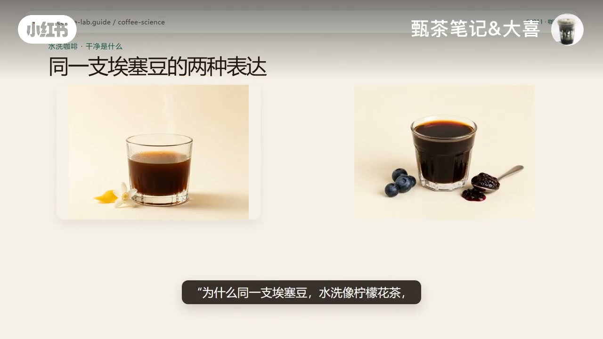
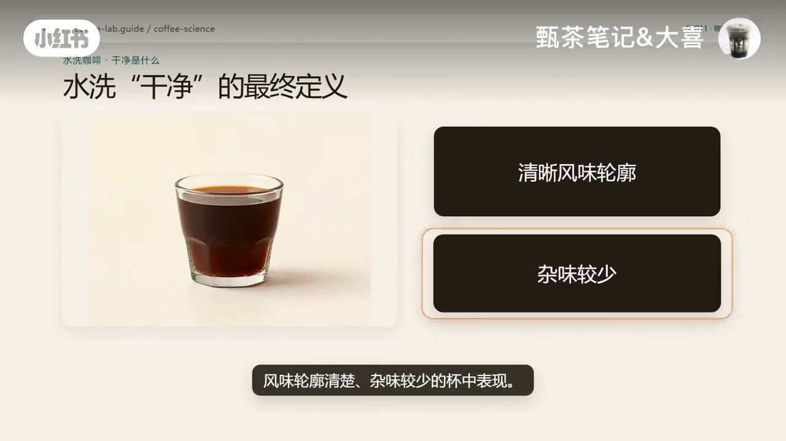

内容要点
小红书账号「甄茶笔记&大喜」用一杯水洗咖啡常被夸「干净」当切口：行业说的干净通常不是卫生，更不是「用水洗过所以更干净」。视频先用画面拆开水洗处理的阶段与日晒对照，说明关键在于更早减少完整果肉参与后续干燥；再划清水洗不是干净认证、风格不等于等级；最后给出杯中判断线索，并把干净收束为「风味轮廓清楚、杂味较少」。下列实录按时间线展开；中段口播稀疏，叙述以画面标题与硬字幕重建为主，观点均标注为作者科普。
知识结构
干净≠卫生、≠洗衣服；更接近味道容易分开、杂味不拖尾的感受。
豆是种子；去皮→处理果胶/发酵清洗→羊皮干燥。关键不是碰了很多水。
水洗更早去掉果实组织，整果长期发酵影响通常更小；但仍会发酵，不是认证。
水洗常见清晰酸质；同一豆不同处理是表达差异；优秀日晒也可干净。
看味道是否分开、余味有无杂味；干净来自减弱果肉长期影响，不是洗得更干净。
水洗咖啡被说「干净」，指的是杯中风味轮廓清楚、杂味较少，而不是洗得更卫生。机制上它通常更早去掉完整果肉对干燥的长期参与；品鉴时别只盯酸，试着分辨味道是否分开、喝完有没有奇怪杂味拖着不走。
00:00–00:40开场：行业「干净」不是卫生，也不是洗衣服
视频以系列课口吻开场（画面标 SP011）。标题直接问：水洗咖啡的「干净」到底是什么？旁边两枚标签抢答——杂味更少、风味更清楚；并写明关键在处理方式：去掉果肉和黏液，让豆子本身更容易被喝懂。
口播只留下一句很短的引子（Whisper：「为什么很多人一喝水洗咖啡就会说」），随后几乎全靠画面推进。作者用「咖啡又不是洗衣服」做反差，把咖啡杯和洗衣机并置，字幕追问：难道水洗咖啡真因为拿水洗过，所以喝起来更干净？紧接着给出行业口径：说一杯咖啡「干净」，通常不是说它卫生；它更接近一种感受——同样有柑橘、花香、酸甜感时，各种味道比较容易一个个分开。


00:40–01:15水洗在做什么：四阶段与「关键不是很多水」
为了解释「为什么这种形容常落在水洗身上」，画面先回到果实结构：咖啡豆是果实里的种子；外面有果皮、果肉，还有一层非常黏的果胶。随后进入「水洗处理的四个阶段」：去皮后，再通过发酵、机械去胶等方式处理剩余果胶，清洗，再把带羊皮层的咖啡种子干燥。
作者把 SCA 概括的核心动作压成两步视觉：去掉果肉时果胶往往还在，再靠发酵与清洗去掉黏性的 mucilage（黏液）。真正重要的，画面用一条橙线划掉水滴——关键不是碰了很多水；并点明这和日晒差别非常大。本段 Whisper 几乎空白，以上句子均来自硬字幕与标题重建。


01:15–02:10对照日晒：更早去掉果实组织，但不是干净认证
日晒侧的关键画面是：相当长一段时间里，种子还待在完整果实里面。水洗侧则强调更早去掉果实组织，于是后续由完整果实长期干燥和发酵带来的影响通常会小一些；作者据此说它特别适合突出单一产地本身的风味特征（画面词：干净·一致·产地特征）。
纠偏立刻跟上：水洗一样会发酵，一样可以产生杂味或缺陷。所以不要把「水洗」理解成一张干净认证——印章被划掉的画面把这句钉死。Whisper 在此附近只抓到孤零零的「发酵」，与画面标题「水洗一样会发酵」相互印证。


02:10–03:10研究线索与风格边界：表达不同，不等于等级高低
作者引用「2026 年一项直接比较发酵」相关研究的叙述：那组水洗咖啡反而具有最高的有机酸浓度；并过渡到水洗常见的清晰风味——例如清晰酸质；当强烈果肉发酵特征不那么突出时，轮廓往往更清楚。注意：视频未给出论文名与样本细节，此处按作者观点呈现，未作外部核实。
同一支埃塞豆的对照最直观：水洗像柠檬花茶，另一种处理更偏浆果果酱。结论不是「谁更正宗」，而是处理方式改变了最后进入杯子里的风味表达。平台上反复出现的水洗/日晒/蜜处理之争，背后常混淆「风格≠等级」：优秀水洗可以干净且复杂；优秀日晒也可以干净，水果感强未必就不干净。

03:10–03:59杯中怎么判：线索收束到「轮廓清楚、杂味较少」
机制句再次收紧：水洗只是减弱果肉长期影响，让咖啡本身的轮廓更容易被喝出来。品鉴时先别只看酸，可以找更有意思的东西——画面标题写作「用五个线索判断干净度」。口播在尾段重新变密（也是 Whisper 主要抓到的部分）：这杯里面的味道是不是很容易被你一个一个分开？柑橘是柑橘，花香是花香，甜感是甜感；喝完以后嘴里有没有奇怪的杂味拖着不走。这才更接近咖啡师说的：「这杯很干净。」
最后记住：水洗咖啡的干净，不是因为它用水洗得比较干净，而是处理方式通常减少了完整果肉长期参与后续干燥的影响，最后更容易得到风味轮廓清楚、杂味较少的杯中表现。最终定义卡把这两点并排高亮。

详细文字转录（10段）
以下内容按 Whisper 原始分段完整呈现，可能包含识别误差与繁体字形；正文已按画面硬字幕与语境校正为简体，并补全中段空白处的画面信息。约 00:03–03:10 口播极稀疏，请以章节叙述与图注为准。
為什麼很多人一喝水洗咖咖咖就會說
發酵
這杯裡面的味道是不是很容易被你一個一個分開
柑橘是柑橘,花香是花香,甜感是甜感
喝完以後嘴裡有沒有奇怪的雜味拖著不走
這才更接近咖啡師說的
這杯很乾淨
所以最後記住,水洗咖啡的乾淨不是因為它用水洗的比較乾淨
而是因為它的處理方式通常減少了完整果肉長期參與後續乾燥的影響
最後更容易得到一種風味輪廓清楚、雜味較少的杯中表現